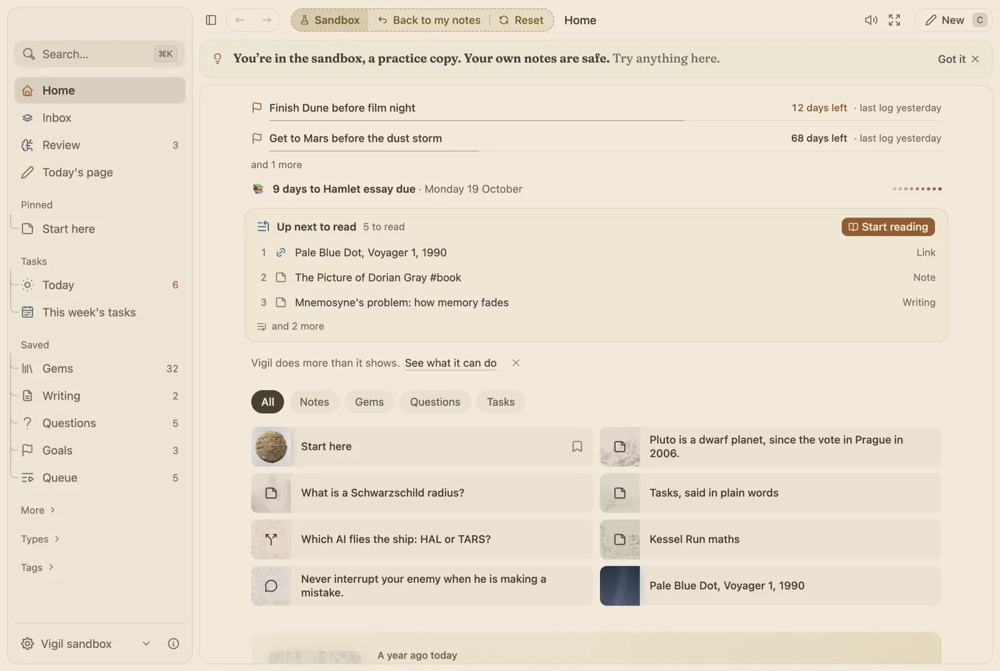
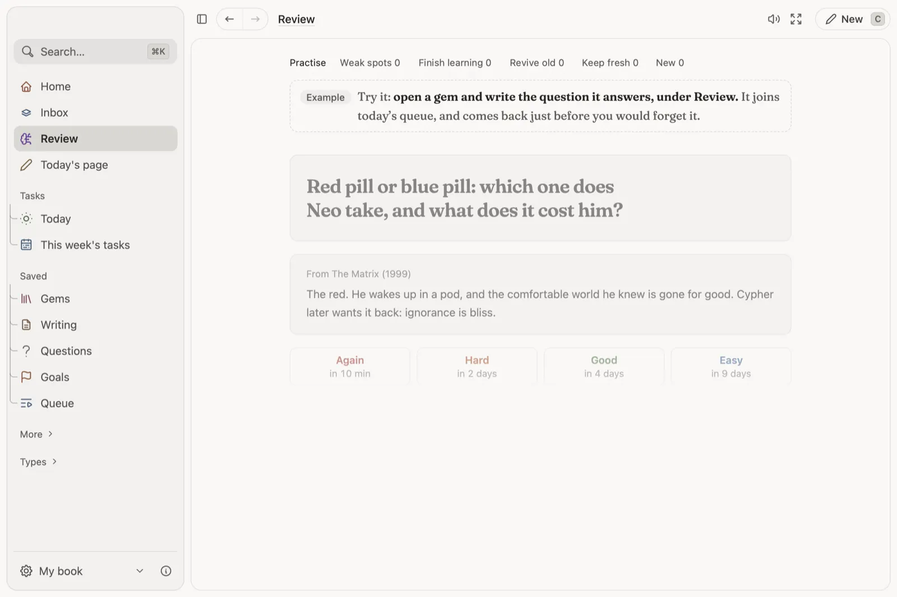

A commonplace book that hands your notes back.
Catch a thought in two keys, work on long notes for weeks, and keep what matters. What you keep comes back in Review just before you would forget it.

Most notes are written once and never read again.
Notion and Obsidian keep pages well, then leave them where you put them. Anki remembers for you, but only cards you write by hand, away from your notes. Todoist keeps the task and loses why you wrote it. Vigil puts quick captures and long notes in one book, and brings the ones you choose back to you.
Notion
Pages, tables and wikis.
Nothing comes back to be remembered.
Obsidian
Linked Markdown notes in a folder.
Notes wait to be opened again.
Anki
Flashcards on a spaced schedule.
Cards live apart from your notes.
Todoist
Tasks with dates, in plain words.
The note behind a task stays elsewhere.
Vigil
Captures, long notes, tasks and Review in one book.
What you keep comes back to you.
Catch it, keep it, see it again.
Catch. Press ⌘ . in any app, write the thought, send it with ⌘ ↵. It waits in your Inbox.
Keep. Tidy the Inbox once a day. A thought worth keeping becomes a gem, in your own words.
See it again. Give a gem the question it answers, and Review asks it just before you would forget.

One page for each part.
Quick capture
Catch a thought from any app in two keys.
Read moreReview and gems
What you keep comes back before you forget it.
Read moreLong notes
A real editor for pages you work on for weeks.
Read moreThe Map
See which notes lean on which.
Read moreYour year
Days add up to weeks, months and seasons.
Read moreSessions
One task, one timer, then close the day.
Read moreSticky notes
A note on your desktop, like paper.
Read moreBooks and the sandbox
Separate notebooks, and a place to practise.
Read moreWho it is for.
Anyone who reads and writes to think. Three kinds of people get the most from it.